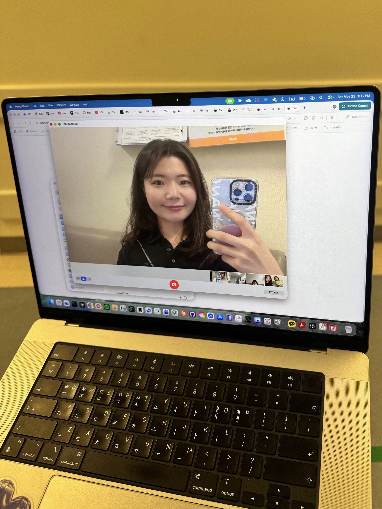

K-MELLODDY
Federated machine-learning consortium for drug discovery, enabling multi-partner model training without sharing proprietary data.

Ph.D. Candidate
Department of Artificial Intelligence, Korea University
Advisor: Prof. Tae-Eui Kam · MAILAB, Korea University
I am an integrated M.S.–Ph.D. student in the Department of Artificial Intelligence at Korea University, working on AI for science. My current research focuses on multimodal generative models that bridge molecular structure and spectroscopy — combining mass spectrometry (MS) and NMR for structure elucidation. I am also interested in making scientific discovery faster and more reliable with AI for medical and healthcare applications.
I previously worked on self-supervised molecular representation learning. Outside of research, I love running and hiking. Feel free to reach out!
* = equal contribution; underline = me.
Federated machine-learning consortium for drug discovery, enabling multi-partner model training without sharing proprietary data.
Generative model that jointly conditions on mass spectrometry and NMR to elucidate molecular structure.
Pretraining molecular encoders on large unlabeled corpora for downstream property prediction.